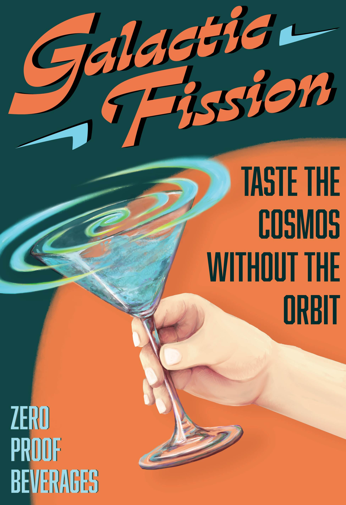

Galactic Fission
Spring 2025 – Graphic Design III & Graphic Design BFA III
Galactic Fission is an invented Raygun Gothic and Googie inspired mocktail company created as my solution for a branding development assignment which I expanded on in my independent coursework. Through this assignment I developed my branding and marketing skills. The final deliverables include: a Wordmark, Logomark, an alternative graphic asset, poster, product packaging sample, brochure and brochure sleeve, mock in-store display, animated asset, and an animated promotional video.
My first step for developing the brand’s identity was research: exploring various fonts and graphics for inspiration. I became inspired by Atompunk—a dystopian, retro-futuristic science fiction subgenre focusing on the Atomic Age and aesthetics from the 1950s and 60s—which inspired the name Galactic Fission. I specifically included fission—the act of splitting into parts—to emphasize removing alcohol from the beverage while retaining the flavor and visual appeal. The typography choices and graphic motifs were heavily influenced by mid-century shape language and Raygun Gothic—the non-dystopian and more architecturally focused cousin to Atompunk—themes, further emphasizing the 1950s inspiration.
Part of the assignment was to created an animated logo or asset. I incorporated studies in digital media and interest in animation to create a frame by frame animation where the rougher digital brush I used inspired me to incorporate illustrations into the rest of the project. I referenced 1950s illustration and hand-painted posters and as I illustrated and designed my poster I developed a stronger sense of the brand’s colors and style, which I was still establishing at this point.
I also chose to incorporate illustration in the product packaging as it is a common feature for IPAs and independently brewed drinks creating a stronger visual association with traditional alcoholic beverages. The beverage packaging was designed to intentionally deviate from the established color scheme of the brand, allowing the client flexibility in creating an expanded beverage line. Due to my gravitation towards storytelling and world-building, I established a loose canon surrounding the figures on the packaging, who became brand mascots. However, as it was not my primary focus, I did not develop the world or characters with too much depth, as it was the least important in establishing the base identity for the brand.
The rest of my focus went into developing promotional material to help market the product; including the multi-disciplinary animated promotional video where I used a combination of 2D and 3D animation techniques.